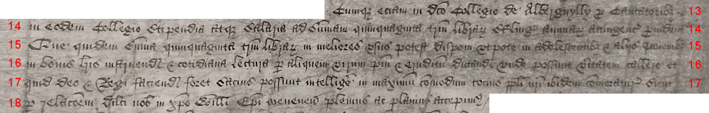
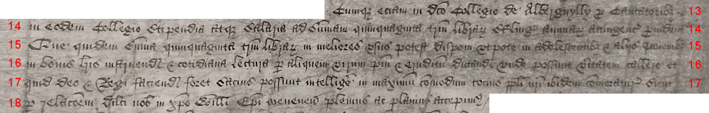
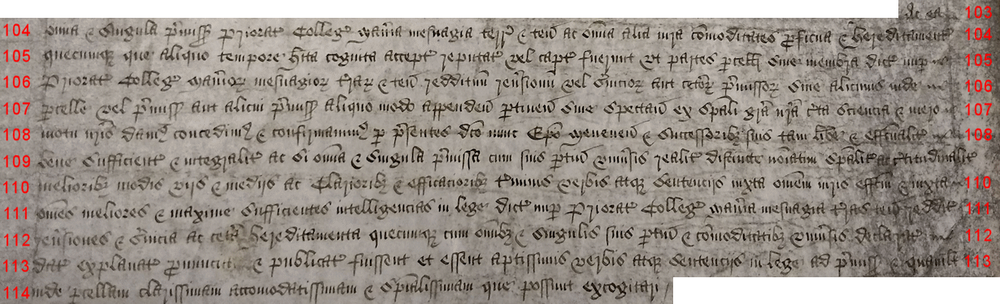
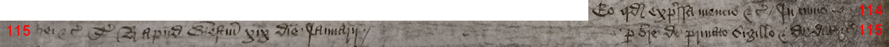
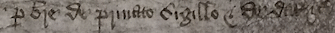
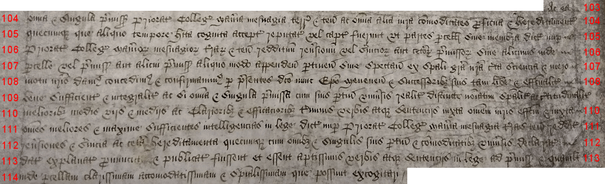
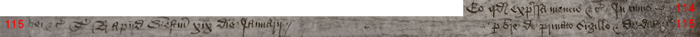
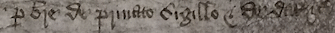

Images and transcription: Witness R
The following page includes images taken from the oldest copy consulted, the Patent Roll, which we have designated Witness R. [include internal link to ms description]
This has been provided as a palaeography sample for those wishing to learn to read this specific type of hand, which was commonly used in the royal Chancery during this period. The text has been broken into blocks and the lines have been numbered.
The transcription here will differ slightly from that provided in the comparison texts. This is because they serve different purposes. In the comparison, certain differences between R and the other copies were ignored: principally, that R continues the medieval practice of condensing all -ae- and -oe- diphthongs to a bare -e-, while all the other copies consulted and compared had "corrected" the orthography, in accordance with Classical/Renaissance Latin standards, by using -ae- and -oe-. We elected not to mark these changes in the textual comparison because it would have introduced a very large number of essentially meaningless points of variation between R and the other copies. However, the text of R as rendered here sticks to the -e- orthography used in the document. Similarly, in this hand (as in some others), small -c- and -t- are often very similar in form and sometimes entirely indistinguishable, especially when found in the middle of a word, and most notably as part of a -cio- or -tio- formation. Here ...[describe whatever I decide] The text of R also does not include the more modernized punctuation used in the later copies, which we did not mark as variants in our comparison; the transcription here adheres to the punctuation (or lack thereof) found in this copy.

[from margin of roll:] Willelmo Episcopo Meneven' de con' sibi et successoribus.

¶ Rex omnibus ad quos et c' salutem. Cum Collegium de Alberguylly in loco inidoneo existit ubi nulla occasio hospitalitatis
2. aliis per viros dicti Collegii administrande datur ad commodum et utilitatem subditorum nostrorum in locis dicto Collegio adjacentibus
3. ad grave dampnum dictorum ligeorum nostrorum /
3. Cumque etiam domus sive Prioratus fratrum predicatorum in oppido nostro de Brechnok
4. in australibus partibus Wallie cum omnibus et omnimodis mesuagiis terris et tenementis bonis rebus necessariis et implementis ad dictum
5. nuper Prioratum spectantibus in manibus et possessione nostris iam existunt vel existere deberent pretextu doni concessionis ac sursum
6. reddicionis Ricardi Davidi nuper Prioris et Conventus eiusdem nuper Prioratus nobis inde facte virtute cujus nos in iure
7. Corone nostre Anglie de dicto nuper Prioriatu mesuagiis terris tenementis ac ceteris omnibus et singulis premissis seisiti sumus in dominico
8. nostro ut de feodo
 



 




